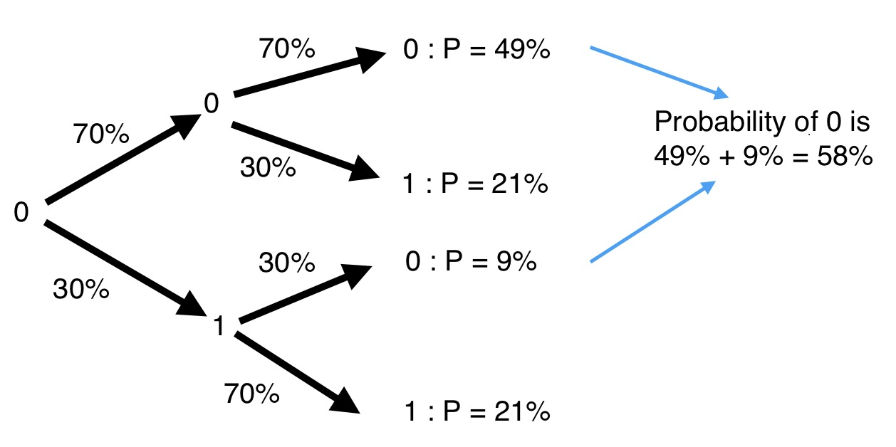
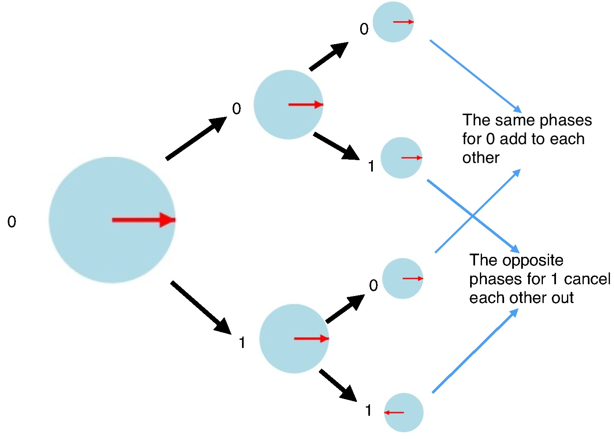
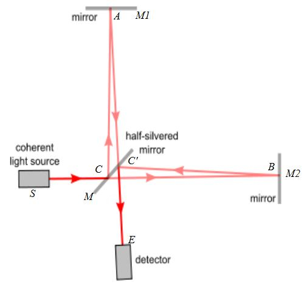
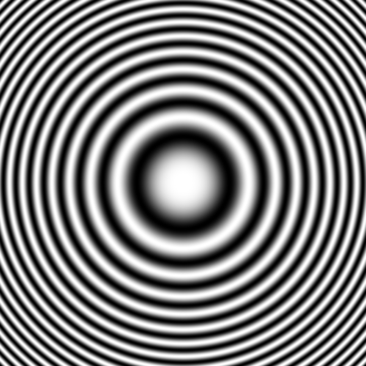

An Interactive Introduction To Quantum Computing
By David Kemp
@david_b_kemp
Heard of quantum computers?
Heard that they are faster than conventional computers?
Perhaps you have heard of quantum bits (abbreviated to qubits).
Maybe you have even heard of the puzzling notion that qubits can have the values 0 and 1 both at the same time.
Let me try to explain what this really means.
This is part one of a two part series for those that want to learn a little about quantum computing, but lack the mathematics and quantum physics background required by many of the introductions out there. It covers some of the basics of quantum computing, such as qubits, state phases, and quantum interference. Part 2 goes on to look at quantum search.
Qubits
I assume you know what plain old ordinary binary bits are. Sorry, I but cannot assume you know nothing at all!
Conventional bits are implemented using many different approaches: e.g. voltages on a wire, pulses of light on a glass fibre, etc. etc.
Just like bits, qubits have a binary state.
Qubits represent 0 and 1 using quantum phenomenon like the nuclear spin direction of individual atoms.
E.g. use “clockwise” for 0 and “anti clockwise” for 1.

The NOT operator
Consider the conventional NOT (or bit-flip) operator. 0 and 1 can represent logical true and false. NOT true is false, and NOT false is true. And so, NOT of 1 is 0, and NOT of 0 is 1.
For example, performing a NOT operation on the right most bit of the binary number 111 flips the target bit and results in 110.
In what follows, it will be convenient to represent the state of a system by listing all possible states and placing a blue disk next to the current state.
Click the button labelled “Not bita” to apply the NOT operation to the left bit, and click the button labelled “Not bitb” to apply the NOT operation to the right bit:
There is nothing quantum mechanical about these first few interactive examples. Their main purpose is to familiarise you with interactive animations I use in this article.
Random NOT
Random NOT: A NOT operator that has a specified chance of flipping a bit.
Although not very common, the “Random NOT” is still just a classical (non-quantum) operator, but it will help me explain the workings of some quantum operators.
Consider applying a Random NOT twice to a bit whose initial value is 0, where the operator has, for instance, a 30% chance of flipping the bit. What is the probability of the final state being 0?
There are a couple of possible scenarios. For instance, the first Random NOT might flip the bit from 0 to 1, and the second Random NOT might flip the bit back to 0. We represent this as:
0 → 1 → 0
There are two paths leading to a final state of 0:
- 0 → 0 → 0 with probability of 0.7 x 0.7 = 0.49
- 0 → 1 → 0 with probability of 0.3 x 0.3 = 0.09
And so the final state will be 0 with a probability of 49% + 9% = 58%
Random NOT (your turn)
Next we provide an interactive animation of the Random NOT operator.
The blue disk now splits in two so that we can track the different possible outcomes.
The probability of being in a state is represented by the radius of the disk.
Press the “Random NOT” button multiple times and note how the arrows add head to tail.
Still nothing quantum mechanical about any of this. We are still just warming up.
Measurement
We have seen how a random NOT operator can cause a conventional computer to have various probabilities of being in different states. Of course in reality it is in only one of those states. We just don't know which one. Strangely, this is an assumption about reality that we will need to reconsider when we look at qubits.
If you peek at the system to determine its actual state, then the probabilities all collapse so that one state (the observed state) is deemed to now have a probability of 1, and all the others are deemed to have a probability of 0.
Remember, the larger the blue disk, the more likely the system will turn out to be in that state.
In quantum computing, the word measurement refers to this act of peeking.
Press the “Random NOT” button multiple times and then press the “measurement” button.
Note that there is still nothing quantum mechanical about this yet. That comes next!
Hadamard of 0
The “Hadamard operator” is a special quantum operator that can be applied to qubits.
Warning: this first look at quantum operators will be pretty boring. I promise it will get interesting soon!
As you will see below, the Hadamard initially acts like a Random NOT with 50% chance of success.
In this interactive example, I purposely disable the Hadamard button after you press it. Later in this article we will see what happens when you apply the Hadamard twice in a row.
Nothing unusual about that was there?
But you will be surprised by what comes next...
Hadamard of 1
Things start to become weird when you look at the Hadamard of 1.
Look carefully at the arrow directions.
Huh?
Phase
Puzzled? You should be if this is all new to you. Please hang in there for a while longer.
The arrow directions represent what physicists call phase:
- it is an abstract concept of quantum mechanics.
- it has no “common sense” interpretation.
- it can only be measured indirectly.
In the case of nuclear spin, phases can be manipulated by applying electric and/or magnetic fields.
We will see the importance of phase in a moment, but first let's look at another interesting quantum computing operator...
T Operator
The T operator rotates the phase of 1, but leaves 0 untouched.
Note how it does not affect the probabilities at all.
Measurement Revisited
Recall:
- Measurement causes the system to collapse to the observed state.
- The larger the blue disk, the more likely the system will collapse to that state.
- Once the system has collapsed to a particular state, it will remain in that state until another operation is performed.
Important: The likelihood of a state being observed is entirely determined by the size of the blue disk, and is completely unaffected by the direction of the arrow.
Quantum Interference
Consider what happens when we apply a Hadamard operation twice in a row.
Let's assume that a qubit is initially known to definitely have the value 0. If you were to apply the Hadamard to it twice in a row, then there are four equally likely scenarios (Recall that “x → y → z” means “the qubit starts with a value x, the first Hadamard results in the qubit having the value y, and the second Hadamard results in the qubit having the value z”):
- 0 → 0 → 0
- 0 → 0 → 1
- 0 → 1 → 0
- 0 → 1 → 1
So the final value should be equally likely to be 0 or 1 but, in reality, applying the Hadamard operator twice in a row always returns the qubit to its original value. In our case, where the qubit is initially 0, two applications of the Hadamard will result in it being 0 again.
Try it out. Press the “Apply Hadamard” button twice and watch it return to having a 100% likelihood of having the value 0.
Totally confused?
If quantum mechanics hasn't profoundly shocked you, you haven't understood it yet.
Neils Bohr
What is going on here?
The state of the qubit after the first Hadamard seems to have a 50% chance of being 0 and a 50% chance of being 1.
The second Hadamard is applied to both the 0 and 1 states and the results are combined.
The arrows still add head to tail.
The two different scenarios ending in a 1 state have opposite phases and so they cancel each other out.
This process of phases causing possible outcomes to cancel or re-enforce is what physicists call interference.
This is what philosophers of physics loose sleep over.
By the way, the mathematically inclined may be worried about all the probabilities not adding up to 1 any more. The trick is that the arrow lengths now have to represent the square roots of the probabilities. We will briefly cover this in more detail in the section entitled Some mathematics in Part 2.
Hadamard of 1 (revisited)
It is instructive to observe the effects of applying a Hadamard twice in a row when the initial value is 1. This time, the qubit returns to 1:
Different kinds of uncertainty
We are actually dealing with two different kinds of uncertainty:
- It is possible that a bit, and even a qubit, may be in a fixed state of 0 or 1, but that you simply do not know which one it is.
- However, it is also possible for a qubit to be in what is called a “superposition” of both 0 and 1. Such a qubit is in a strange combination of both 0 and 1.
Small Diversion: Superposition of Locations
So far, the rather abstract phenomenon of nuclear spin is the only approach that I have mentioned for creating qubits.
Quantum physics seems even more bizarre when you discover that physical objects can be in superpositions of different locations.
The photons travelling through an “interferometer” are in superpositions of locations that can be kilometres apart (as they are in the LIGO interferometer).
A simple interferometer is shown below. Photons are emitted by a light source (e.g. a laser) that is pointing at a “half silvered mirror”, which reflects some of the light and lets some of the light through.
Individual photons end up in a superposition of having been reflected and having been let through. A couple more mirrors are used to bring the split light beam back together at a detector. The positions of the mirrors and the detector all effect the lengths of the two different paths, so that one path can be longer than the other. Like the T operator described earlier, a change in the relative path lengths will alter the relative phases of the two photon states. A difference equal to the wavelength of light is enough to change the relative phases by an entire 360 degrees. If the phases are exactly opposite, then they will cancel each other out, and the detector will not detect anything. The resulting effect will be an alternating series of light and dark concentric rings like those shown below.
This interference effect even happens when the light source is slowly emitting photons one at a time.
It is tempting to think that the half silvered mirror is splitting each photon in two and that the interference effects are caused by the two photons interacting with each other. But this is not what happens.
If detectors are placed on the two paths, and the light source is slowly emitting photons one at a time, then the detectors only ever detect a photon on one path or the other. They never detect two photons at once! (Well, they very occasionally do due to the light source very occasionally emitting two at once, but the frequency that this should happen is easily predicted and verified.)
If detectors are placed on either or both of the two paths, then the act of detecting the presence (or absence) of the photon causes the superposition to collapse to one or the other, and the interference effects disappear, even if the detector lets the photon continue on.
It gets even more interesting when you have more than one qubit
The quantum weirdness rises to a whole new level when there are two or more qubits interacting. This is explored in Part 2.
If you want to experiment with various single qubit quantum operations first, then have a play with the Quantum Computer Gate Playground
Attributions
Michelson Interferometer: http://commons.wikimedia.org/wiki/File:Michaelson_with_letters.jpg
Interference Pattern: http://commons.wikimedia.org/wiki/File:Zonenplatte_Cosinus.png